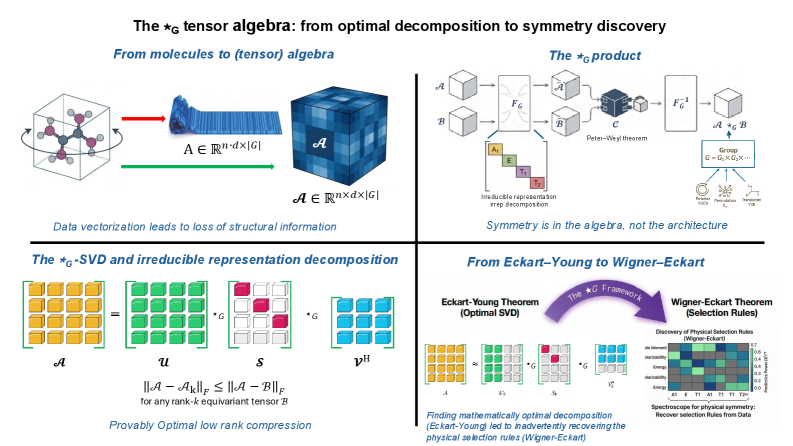
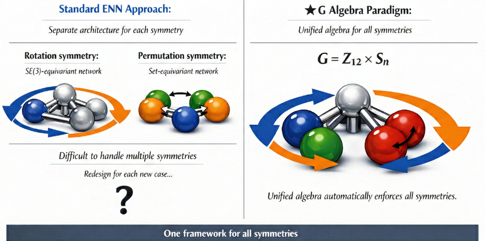
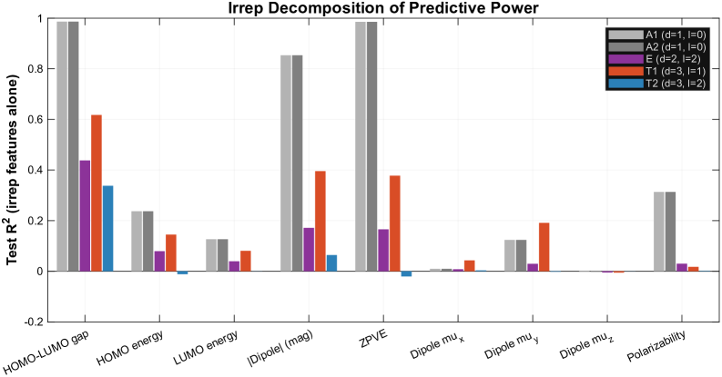
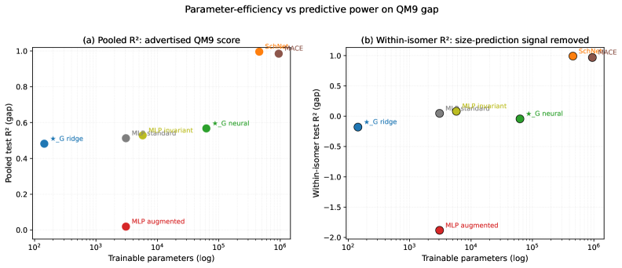

The algebraic results, including the blockwise transfer of matrix tools and the Frobenius-optimal star_G-SVD, are machine-checked in Lean 4 with zero sorry and five explicit axioms.
Abstract
Symmetry is central to the physical sciences, yet machine learning usually captures it only approximately, leaving a residual per-step equivariance error $\varepsilon$ that compounds with depth $M$ as $M\varepsilon$, whereas exact equivariance holds at unbounded depth; we demonstrate this divergence at fourteen orders of magnitude. We show that a symmetry can be made exact by construction, as the multiplication rule of a tensor algebra. In the resulting $\starG$ algebra, defined by any finite group $G$, the group-Fourier transform block-diagonalizes every tensor into irreducible-representation blocks, making equivariance intrinsic; requiring equivariance conversely forces this suitably normalized transform, so the algebra is determined by $G$ rather than chosen. The standard matrix toolbox, including a Frobenius-optimal low-rank factorization, transfers blockwise, machine-checked in Lean 4 under an explicit axiom budget, and extends unchanged to band-limited compact groups and, under periodic boundary conditions, to all 230 crystallographic space groups and the compact little-group fibers of Euclidean and Poincaré symmetry. This exactness is an applied capability: on inorganic-crystal elastic tensors the algebra enforces point-group selection rules exactly on the output of any predictor, driving a trained graph network's forbidden-channel leakage from $10^{-2}$ to machine zero, eliminating mechanically unstable predictions, and recovering viable materials that an unconstrained screen discards; on molecular data, with no quantum-mechanical input, it exposes octahedral selection-rule signatures consistent with the Wigner–Eckart theorem. Matched networks lead on pooled molecular accuracy, which we report plainly: the contribution is a complementary algebraic calculus, structural and diagnostic, exact at any depth.
Problem
Machine learning usually captures physical symmetry only approximately, so per-step equivariance error accumulates with network depth. The authors seek a construction in which symmetry is exact by design for arbitrary finite groups.
Approach
The authors define the star_G tensor algebra, whose multiplication is group convolution over a finite group G. The group-Fourier transform block-diagonalizes tensors into irreducible-representation blocks, which makes equivariance intrinsic. The matrix toolbox transfers blockwise, including an Eckart–Young-optimal star_G-SVD and a product-group ring isomorphism, and these algebraic proofs are formalized in Lean 4. The framework is applied to elastic tensors of inorganic crystals and to QM9 molecular data, using ridge regression or neural regressors on the invariant features.

Figure 1: The \star_{G} tensor algebra: from optimal decomposition to symmetry discovery. ( Top left, From molecules to algebra ) Molecular data measured under all elements of a symmetry group G form a structured tensor \mathcal{A}\in\mathbb{R}^{n\times d\times|G|} , preserving geometric information that is destroyed by vectorization into A\in\mathbb{R}^{n\cdot d\times|G|} . ( Top right, The \star

Figure 12: Paradigm comparison. Left (ENN paradigm): each symmetry requires a bespoke architecture; combining symmetries requires redesigning from scratch. Right ( \star_{G} paradigm): the same algebra handles any group; composing symmetries requires only specifying G_{1}\times G_{2} in the Fourier transform.
Results
The algebra enforces point-group selection rules exactly on the output of any predictor, reducing a graph network's forbidden-channel leakage from 1e-2 to machine zero. On QM9 it recovers octahedral selection-rule signatures consistent with the Wigner–Eckart theorem without quantum-mechanical input. Matched networks such as SchNet and MACE remain more accurate on pooled molecular prediction.

Figure 9: Empirical recovery of Wigner–Eckart selection rules. Per-irrep predictive power (R 2 ) for each quantum property. Scalar properties (blue shades) are dominated by A 1 ( l\!=\!0 ). Dipole magnitude (orange) also lives primarily in A 1 because |\boldsymbol{\mu}| is a scalar. Dipole vector components (red shades) show a qualitatively different pattern: A 1 gives nearly zero while T 1 ( l\!=

Figure 11: Parameter-efficiency vs predictive power on QM9 HOMO–LUMO gap. ( a ) Pooled test R^{2} vs trainable parameters (3 seeds, error bars are \pm std). MACE occupies the upper-right ( R^{2}=0.985 at 945{,}168 parameters); \star_{G} -SVD + Ridge occupies the upper-left at 144 parameters ( R^{2}=0.482 , parameter efficiency \sim 6{,}600\times better than MACE). MLP-augmented sits at the bottom